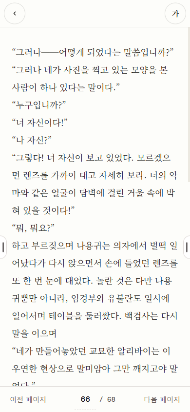
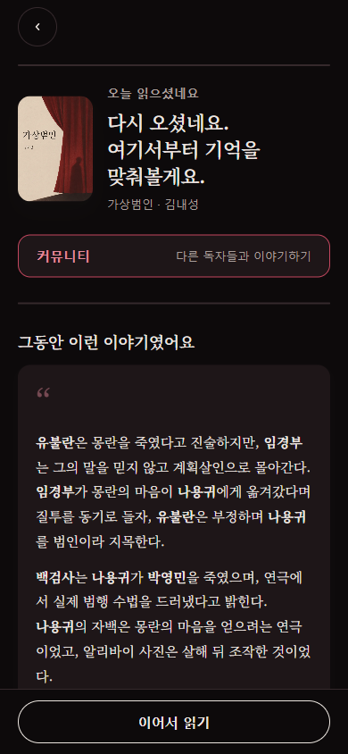
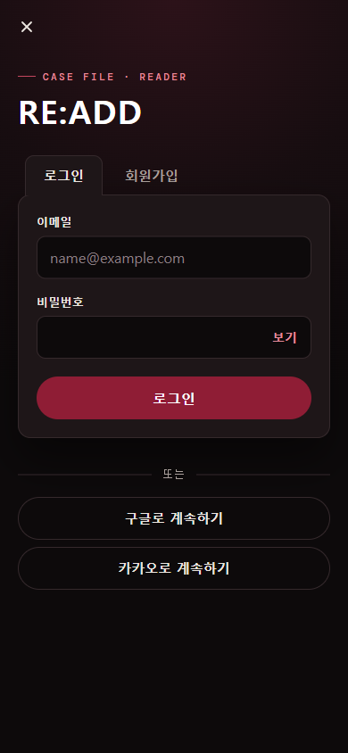

RE:ADD 모바일 전후 비교
왼쪽은 2026-11-19 운영 화면(390×844)을 그대로 캡처한 것이고, 오른쪽은 같은 화면을 고쳐 다시 그린 시안입니다. 색·글꼴·버튼 모양은 지금 코드의 값을 그대로 썼고, 바꾼 부분만 다릅니다.
01읽기 화면에서 추리 도구를 바로 찾게
양옆 손잡이가 같은 모양의 작은 세로 막대라서, 오른쪽에 추리 노트·인물관계도·아모가 있다는 걸 알기 어렵습니다.

“그러나──어떻게 되었다는 말씀입니까?”
“그러나 네가 사진을 찍고 있는 모양을 본 사람이 하나 있다는 말이다.”
“누구입니까?”
“너 자신이다!”
“나 자신?”
“그렇다! 너 자신이 보고 있었다. 모르겠으면 렌즈를 가까이 대고 자세히 보라. 너의 악마와 같은 얼굴이 담벽에 걸린 거울 속에 박혀 있을 것이다!”
“뭐, 뭐요?”
하고 부르짖으며 나용귀는 의자에서 벌떡 일어났다가 다시 앉으면서 손에 들었던 렌즈를 또 한 번 눈에 대었다. 놀란 것은 다만 나용귀뿐만 아니라, 임경부와 유불란도 일시에 일어서며 테이블을 둘러쌌다.
- 오른쪽 손잡이는 버건디 바탕에 아이콘과 "추리" 글자를 넣어, 이 서비스의 핵심 기능 입구로 보이게 했습니다. 왼쪽 목차 손잡이는 회색으로 두어 둘의 무게를 나눴습니다.
nav-label-icon - 보이는 손잡이는 폭 30px이지만 실제로 누르는 영역은 44×104px입니다(점선은 설명용). 위치는 지금처럼 엄지가 닿는 세로 가운데보다 약간 아래입니다.
touch-target-size - 책을 처음 열 때 한 번만 안내 말풍선을 띄우고, "알겠어요"를 누르면 다시 나오지 않습니다.
swipe-clarity - 손잡이가 본문 글자를 덮지 않도록 본문 좌우 여백을 24px에서 38px로 늘렸습니다. 이렇게 하면 한 줄 글자 수가 약 2자 줄어듭니다.
02단어가 줄 끝에서 쪼개지지 않게
한국어 기본 줄바꿈(word-break: normal)이라서 "나용/귀", "연극/이었고"처럼 단어 중간에서 줄이 넘어갑니다. 인물 이름이 갈라지면 추리하며 읽는 흐름이 끊깁니다.
유불란은 몽란을 죽였다고 진술하지만, 임경부는 그의 말을 믿지 않고 계획살인으로 몰아간다. 임경부가 몽란의 마음이 나용귀에게 옮겨갔다며 질투를 동기로 들자, 유불란은 부정하며 나용귀를 범인이라 지목한다.
백검사는 나용귀가 박영민을 죽였으며, 연극에서 실제 범행 수법을 드러냈다고 밝힌다. 나용귀의 자백은 몽란의 마음을 얻으려는 연극이었고, 알리바이 사진은 살해 뒤 조작한 것이었다.
사진 속 금붕어와 거울에 비친 나용귀가 조작을 드러내고, 전화로 운전수 박병국의 체포와 나용귀의 복수단 연루가 전해진다.
- 본문 계열(읽기 본문, 브리핑 요약, 타임라인, 아모 말풍선)에
word-break: keep-all을 줍니다. 아주 긴 영문·주소가 화면 밖으로 넘치지 않게overflow-wrap: anywhere도 함께 씁니다. - 시각 디자인은 그대로이고 CSS 두 줄 차이입니다. 오른쪽 끝이 지금보다 들쭉날쭉해지는 대신 단어가 온전히 읽힙니다. 표시한 부분이 왼쪽에서 "나용 / 귀의"로 잘렸던 곳입니다.
03브리핑에서 "이어서 읽기"가 먼저 보이게
빨간 테두리 커뮤니티 카드가 줄거리 요약보다 위에서 가장 눈에 띄고, 정작 주된 행동인 "이어서 읽기"는 테두리만 있는 버튼입니다. 몇 쪽까지 읽었는지도 화면에 없습니다.

오늘 읽으셨네요
다시 오셨네요.
여기서부터 기억을 맞춰볼게요.
그동안 이런 이야기였어요
유불란은 몽란을 죽였다고 진술하지만, 임경부는 그의 말을 믿지 않고 계획살인으로 몰아간다. 임경부가 몽란의 마음이 나용귀에게 옮겨갔다며 질투를 동기로 들자, 유불란은 부정하며 나용귀를 범인이라 지목한다.
백검사는 나용귀가 박영민을 죽였으며, 연극에서 실제 범행 수법을 드러냈다고 밝힌다.
- 머리 바로 아래에 지금 장과 쪽수(5장 의외의 결말, 66 / 68쪽)를 둡니다. 브리핑의 목적인 "어디까지 읽었는지 되찾기"가 첫눈에 보입니다. 값은 지금도 화면에 있는 목차 강조·쪽수 입력칸에서 쓰는 것과 같습니다.
- "이어서 읽기"를 로그인 버튼과 같은 버건디로 채우고 "66쪽부터"를 붙였습니다. 화면에서 채운 버튼은 이것 하나입니다.
visual-hierarchy - 커뮤니티 카드는 요약 위에서 빼서 추리 노트와 목차 다음 맨 아래로 옮깁니다. 점선 상자는 옮긴 순서를 보여 주는 설명용이고 실제 화면에는 없습니다.
04관계 목록을 사람별로 묶기
이몽란을 누르면 유불란이 "사랑(의심·주장) / 연인(사실) / 사랑(의심·주장)"으로 세 줄, 박영민도 세 줄 나옵니다. 머리글 별칭도 반복되고, 관계 이름도 "윗사람이다"처럼 서술형이 섞입니다.
아래로 이어지는 줄(화면 밖, 실측 텍스트): 유불란 연인 사실 · 박영민 윗사람이다 사실 · 박영민 욕망 사실 · 임경부 미움 사실 · 유불란 사랑 의심·주장. 모두 8줄.
이몽란(좌장의 부인)과 이어진 사람
4명 · 관계 8개
- 같은 사람과의 관계는 한 칸에 모으고, 관계는 칩으로 나열합니다. 사실은 채운 칩, 의심·주장은 점선 칩으로 구분합니다. 관계도 선 모양(실선/점선)과 같은 규칙입니다.
- 완전히 같은 관계(유불란 "사랑, 의심·주장" 두 줄)는 칩 하나로 합칩니다. 오른쪽 숫자는 원래 관계 개수(유불란 3)를 남겨 정보가 사라지지 않게 했습니다.
- 머리글 별칭은 대표 하나만 씁니다("부인·좌장의 부인" → "좌장의 부인"). 관계 이름은 명사형으로 맞춥니다("윗사람이다" → "윗사람"). 이 두 가지는 화면보다 관계 데이터 정리로 고치는 게 맞을 수 있습니다.
05로그인 이유를 말하고, 간편 로그인을 먼저
"작품 보기"를 누르면 설명 없이 로그인 화면이 뜹니다. 구글·카카오 버튼이 같은 회색 테두리라 구분되지 않고, 비밀번호 찾기도 없습니다.

RE:ADD
로그인하면 읽던 쪽과 추리 노트를 어느 기기에서든 이어서 볼 수 있어요.
 카카오로 계속하기
카카오로 계속하기 구글로 계속하기
구글로 계속하기- 제목 아래에 왜 로그인하는지 한 줄을 넣었습니다. "작품 보기"에서 넘어온 사람이 영문을 몰라 닫지 않게 하려는 것입니다.
- 대부분 쓰는 간편 로그인을 위로 올리고, 카카오는 노란 바탕, 구글은 흰 바탕에 각 로고를 넣어 한눈에 구분되게 했습니다. 실제 적용 때는 각 회사의 버튼 가이드를 따라야 합니다.
- "비밀번호를 잊었어요"를 추가하고, 로그인/회원가입 탭은 아래 링크 하나로 줄였습니다.
accessible-authentication
시안에서 실제와 다른 점
- "지금" 이미지는 ego lite(Chromium)에서 iPhone 크기로 흉내 내 찍은 운영 화면입니다. 실제 iPhone Safari와는 글꼴 렌더링이 조금 다를 수 있습니다.
- "바꾼 뒤"는 HTML로 다시 그린 그림이고, 아직 코드에는 반영하지 않았습니다. 브리핑 표지는 실제 캡처에서 잘라 쓴 것입니다.
- 본문·요약·관계 문구는 캡처한 운영 화면의 실제 텍스트입니다. 안내 말풍선, 로그인 설명, "66쪽부터", "4명 · 관계 8개", "비밀번호를 잊었어요"는 제가 제안하는 문구입니다.
- 01의 점선 사각형(누르는 영역), 03의 점선 상자(옮긴 순서), 02의 강조 표시는 설명용이고 실제 화면에는 넣지 않습니다.
- 카카오·구글 로고는 Simple Icons의 단색·기본 로고입니다. 공식 로그인 버튼 이미지가 아닙니다.
- 비밀번호 찾기 기능은 지금 백엔드에 있는지 확인하지 않았습니다. 없다면 별도 개발이 필요합니다.
- 로그인 화면의 글꼴은 이 작업 공간에서 해당 코드를 찾지 못해 Pretendard로 그렸습니다. "RE:ADD" 글자 굵기처럼 바꾸지 않은 부분이 실제와 조금 달라 보일 수 있습니다.